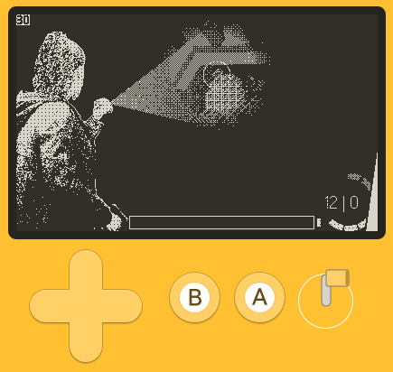
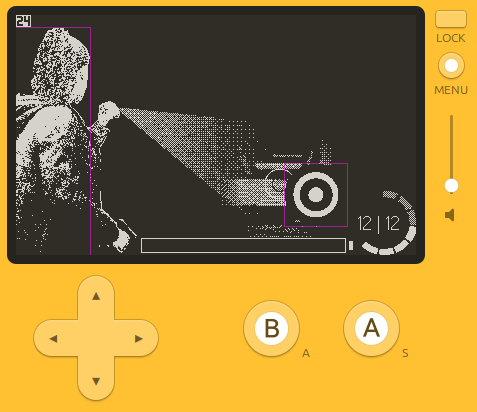
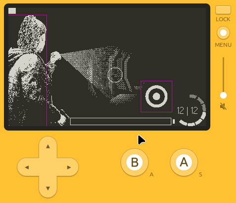
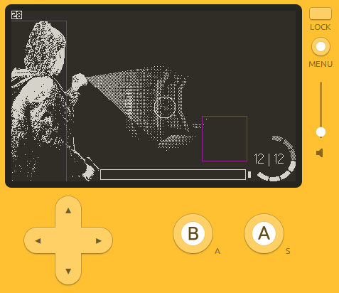

An important part of almost every game it the combat, and this game is no exception. In the final version of the game combat will be presented as shooting gallerias that sees players shooting enemies that move towards them down the hall or target specific weak points. I would like to lean into the survival horror inspirations more in combat, I plan to do this by adding weapon sway/ inertia, having a low rate of fire and a slow reload to build tension and slow moving enemies.
I am very happy with how the current combat system works, the reload speed and rate of fire have already been brought to a level that I am happy with. The current system also has taken into consideration as to how gunshots will be registered. Whenever the gun is fired a Sprite.CollideRect which will be able to detect the overlap of another collider and thus register a hit. However not all elements of the current system are as robust, for instance: the only indication that the gun is fired is the changing of the ammo count UI, and a large flash. These are a good start however there is nothing to communicate a hit or a miss to players. Thus why particles will be important to add. Sound is another element I would like to add to aid in the clarity of shooting.
Note that the monster isn't affected by getting shot in any way. This will be what this update aims to fix.

My initial idea on how to implement additional weapon movement was to have a Vector2D (stores x and y positional data) to generate an ‘cursor offset’. This cursor offset would be a combination of inertia (calculated by tallying how many consecutive frames a movement direction was held down, and slowly decreasing that value when the button is released) and weapon sway (calculated by using a sin and cosin wave pair to make the cursor move in a circle). This offset would be calculated and then multiplied by a “weapon sway intensity” variable.
I started implementing the inertia, but as it changed the position of the mouse, it also change the position of the lighting mask (see the Dev Log on lighting). In short: the lighting effect is highly reliant on the Lighting mask and the background sprite moving relative to one another in units of 4 pixels. If this consistent movement isn't reached then nasty flickering effects will occur (not shown due to risk of triggering seizures). Remnants of the inertia system can be seen as in other clips shown in this Dev Log a small black circle can be seen in/around the player cursor, this is the calculated inertia. So in future I will need to think of a new way to achieve the desired effect, or life without it. My current plan of how to execute this is to separate the lighting and cursor, have cursor move with the calculated dynamic aiming system and the flashlight (Lighting Mask) continue to move at its consistent 4 pixels per frame.
Whilst the Playdate does allow for recorded sound I have decided to use the built in synthesis engine both for performance and as an opportunity to learn about programming music. I am very familiar with synthesizers and the architecture of various synthesis engines of hardware synths, but the tactile interface of a hardware synth is vary different to the process of controlling each variable of the sound individually. The sound its self consists of two elements: white noise and a low bass to give the sound some additional kick.
--gun noise
local gunNoise = pd.sound.synth.new(pd.sound.kWaveNoise)
gunNoise:setADSR(0,0.3,0,0)
local gunBass = pd.sound.synth.new(pd.sound.kWaveSawtooth)
gunBass:setADSR(0,0.3,0,0)
The sound was pretty easy to implement: in the declarations I defined the wave of each sound. I also set an envelope generator (EG) which defines the the shape of the sound Attack, Decay, Sustain and Release (ADSR) or how loud the sound is at different phases of its life cycle.
--Play Gun Noise (as part of the shooting behaviour)
gunNoise:playNote(261.63,1,1)
gunBass:playNote(50,0.75,1)
Finally, the sound is played as part of the ShootBeh function and is triggered alongside the flashing effects and changing of ammo count.
When it comes to the sound/music for the full game, I still have a lot to learn and plan. Because I only have 1 sound effect at the moment I could have used an audio sample, but as the game expands the memory requirements may cause some issues. While my project is white small and I have yet to even taking up half of the systems memory, it is still something I wish to consider, thus why synthesising a majority of the sound track on device. My gun sound effect works because it is a simple sound being triggered once, but when more complicated sounds and music come into being I don’t want to program each note separately. As such I should look in to MIDI sequencing on the Playdate which I know is possible, due to it being featured in the Playdate SDK and documentation, I just wouldn't know how to compose for such a pipeline. Composition as a whole would be very different to my previous experience with making electronic music, so in future I might find it useful to research the music of game consoles like the Super Nintendo Entertainment System (SNES), specifically titles like Super Metroid.
The Majority of the Progress has been made in terms of actually having working shooting game play, with targets that react to being hit. This is done through the use of Object oriented Programming (OOP) which Lua doesn’t nativity support, but the Playdate SDK provides and OOP library. The reason I am using OOP as oppose to other approaches is because it will allow me to have multiple instances of a given object, and utilise inheritance and polymorphism. This allows me to define target behaviours, like what happens when they are hit, what happens when they die, and make several different versions of these targets (practice target, pad lock, enemy, enemy weak point, etc) with minimal lines of code.
I started creating the particles first as I could use them weather or not the target class is working. I knew that as the project currently stands I only need 2 sets of particles: sparks for when an inorganic target is hit, and blood for when an organic target is hit. Both set were pre-rendered in blender as having hundreds of individual particles would be a pain to make, and highly performance draining. The sparks were created using Blenders particle simulation system, and the blood splatter was made with Blenders fluid simulations system, neither I had had much experience so it was nice to learn some new workflows. Once each set of images were rendered they were converted to sprite image tables so that they can be read by the Playdate.
The most time consuming process of creating the sprites was implementing them. I have made animations for the playdate in the past:
- one was part of my Playdate Slot Machine project, but this was done incredibly poorly. I used an array and had to reference each image in my animations separately, this was incredibly time consuming to add a single new animation.
- And the other was part of this project: specifically a version of my start up logo that was animated. This was implemented with an image table and a Playdate animator. I learned several important things using this method, it is good to round the output value of the animator to ensure it only outputs whole numbers as to not incorrectly draw half an image form the table.
As for my particle class, I created a new class which inherits from the Playdate.Graphics.Sprite meaning that we can use any sprite function in our new class. This class contains information as to its position, size and which image it should be, it also internally sets up an “offsetArray” this is to ensure that each animation is centred within the radius of the players aiming reticle.
class('Particle').extends(gfx.sprite)
Function Particle:init(x,y,z,height,width,imageID)
Particle.super.init(self)
--============--
self.animator = gfx.animator.new((500/30*25),0,25)
self.legnthTableArray = {{25,45}{16,5}}
--1 == sparks, 2 == blood
self.imageTable = [gfx.imagetable.new("img/Particles/SparkParticleSpriteSheet_PD-table-64-64.png"),gfx.imagetable.new("img/Particles/BloodParticleSpriteSheet_PD-table-64-64.png")]
self.offsetArray = NewVector2 (16, 32)
--=================--
if z == nil then z = 1 end
self:moveTo(x + self.offsetArray.x,y + self.offsetArray.y)-- move to the xy position of the cursor
self:add()
end
function Particle:update()
--envoke the end of life funtion when the animator has ended
if self.animator:ended() then
self:RemoveSprite()
else
--during the animator
if self.imageTable ~= nil then – checks to make sure image table exists
local myRoundedNumber = RoudToNearestMultipleOfNumb(self.animator:currentValue(),1) -- rounds number to ensure the animator lines up with frame rate
local myIMG = self.imageTable[self.ImageID}:getImage(myRoundedNumber)-- retrieves image from image table
self:setImage(myIMG)-- sets the image of the sprite to be the one retrieved from the image table
end
end
end
GFX.Sprite:Update call. During which the animator checks to see if it is still running, if it has ended it removes the sprite (it actually calls the die function to allow for additional affects to occur, but this is simplified code for demonstration purposes), if the animator is till running: it will retrieve the required image from its respective array and store it as a local value that it then sets as the image of the sprite. I had a lot of trouble figuring out the syntax for this as my previous example (my animated logo) used the GFX.DrawTable function, and as this new class is based of of sprites its is unable to draw directly to the screen.
function ShootBeh()
if canShoot then
if ammoInGun >= 0 then -- check to see if there is ammo in gun
ammoInGun = ammoInGun - 1
shootflashBool = true
canShoot = false
shootflashBool = true
pd.timer.performAfterDelay(shootCoolDown,ResetCanShootBool) -- timer that once complete will reset lighting, disable the colider and allows the player to shoot again.
-- handle collisions
print(cursorSprite:overlappingSprites()[1])
-- hit particle
-- the only two hittable things are the enemy(blood particles) and the enviroment (sparks particle), so i can know easily which to use
--only the enemies use target
if(cursorSprite:overlappingSprites()[1]) == nil then
--miss
local myHitMarker = Particle(mousePosX,mousePosY, 1, 1,1,1)
print("I didn't hit anything")
else
--hit
print("I hit something")
--check if other object is a target, if so make it take damage
if cursorSprite:overlappingSprites()[1]:isa(Target) then
cursorSprite:overlappingSprites()[1]:TakeDamage(1)
end
end
end
end
end
Currently the system that decides weather or not the hit FX particle is a spark one or a blood one is decided by the ShootBeh script. This works for the game as it is at the moment, as the only targets will be organic monsters, but in the future I would like to make inorganic targets such as a breakable padlock, which will require the spark FX. To make this change the spawning of particles will be OnHit function of the particles class.

Note that the particle system changes depending or weather or not it is hitting a target(target image a place holder for testing)
code shown is simplified for sake of showcasing system and only shows details relevent to that feature.
function Target:init(x,y,z,height,width,hp,myBGSprite)
Target.super.init(self)
self.z = z
self:setCollideRect (-width/z + 64, -height/z + 64, width/z, height/z)
self:moveTo(x/z,y/z)
self.hp = hp
self:add()
end
function Target:TakeDamage(ammount)
self.hp -= ammount
if self.hp <= 0 then
print("i will die now")
self:Die();
end
print("i got hit")
print(self.hp)
end

By pushing the spawning of the Target behind the lighting mask(see the Dev Log on lighting) I am able to hid the target in the shadows, thus requiring the player to “search” with the flashlight. To further encourage the use of the flashlight: targets now randomly change position when they are hit (not groundbreaking game-play I know but it helps show what the game can be).
Overall I’m happy with how the project is progressing, I’ve learned a lot about developing out of engine, although coming from a background of using game engines (Unity 3D, Unreal Engine 5) I found myself struggling to contextualise workflows I already know into a new environment. I’m sure there are several elements of the execution of this project that are not best practices. But even still, I have found this project to be a great learning exercise.

Shooting game-play with targets, hit effects and lighting.
For the time being I think I will take a break from this project, I would still like to change aspects I am unhappy with, for instance I would like to improve the Targets system, mostly to allow them to properly be tracked in 3D space so it looks like they really exist in the environment. I would still like to add weapon sway and inertia, so long as I am able to avoid image flickering due to overlapping dithering patterns. And the 2D side of the game hasn't event been started yet. I would like to return to this project after I gain more experience, and perhaps learning to manage and scope projects better.
Powered by w3.css